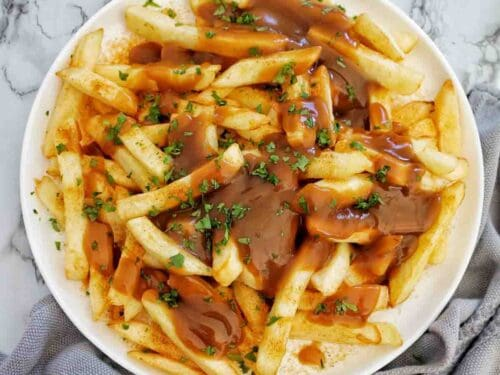

Chips Cheese and Gravy

Description
A delicious Homemade comfort meal that is easy and quick to make. Consisting of chips, grated cheese of your choosing, and thick gravy, this cheap ingreadients meal
can easily be taylored for an individual portion or a family meal.
Ingredients
- Chips (a handful to a bag)
- Cheese grated as large or as fine as to like
- Gravy, bisto best is the correct one but any will do
Steps
- Cook the chips either in the oven or a fryer or air fyer
- While waiting for the chips to cook, grate the cheese
- Boil the kettle and get the gravy mixture ready
- Once the chips are done put into a large bowl or plate
- Add the grated cheese over the chips
- Make the gravy as thick as you can and pour it over the cheese making sure its melted